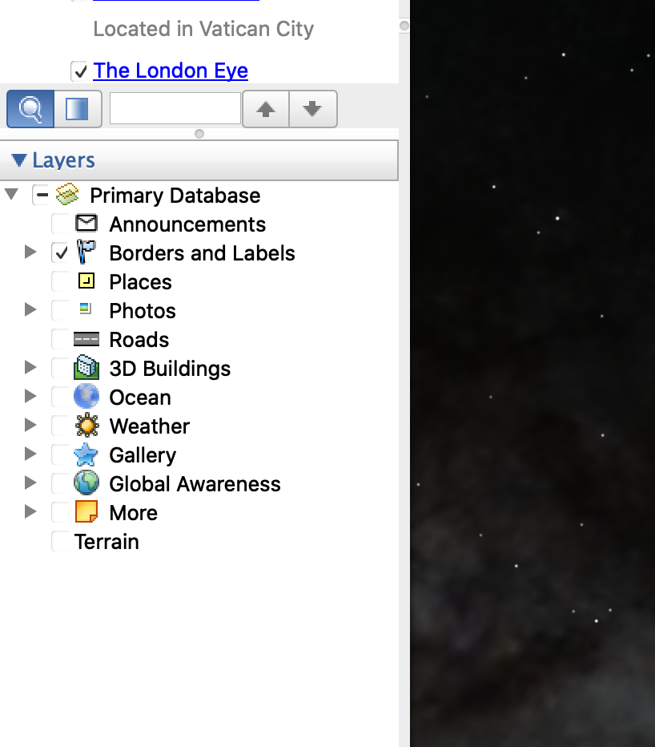

Use¶
Navigating the layers
Borders and Lables
This highlights the boarders in between countries, states, and counties. While showing city and town names.
Places
This shows places such as airports, hospitals, schools, museums, etc..
Photo
This shows you pictures at specific locations.
Ex.

Roads
This shows the names of roads and highlights every road documented.
3D buildings
Popular buildings are created in 3D and this layers allows you to view the building as if it were right in front of you.
Oceans
This layer shows you a wide variety of ocean related sites, such as canals, shipwrecks, dive sites, marine life in a specific area, etc..
Weather
This layer will show you the weather for the specific location you’re looking at.
Gallery
This will you popular photos of locations and events with a small description and a link to a full article.
Global Awareness
This layer brings up locations to spread awareness of local happenings, such as the Appalachian mountain top removals that coal companies are doing in WV, and KY.
Tips
Although there is a zoom feature its easier to zoom in by placing two finders on the track pad and sliding them down at the same time and to zoom out by sliding them up.
There is a search bar on the top left of the screen that allows you to search locations instead of having to zoom out and try to locate it visually.
Neat Features
Along the top there is a sunset button that will show the current sun exposure on earth.

Imminently to the left of the sunset button is a back in time button that allows you to view the section of earth you have chosen but an older photo that was taken years ago.

Another cool feature is the button immediately to the right of the sunset button. This button allows you to view along with earth, the sky, the moon, and mars.